EAP-TLS patch for pppd
Connecting a Windows client to a PPTP server using X.509 certificates
Before setting up the Windows pptp VPN connection first make sure that you have created
your X.509 certificates. A short tutorial on how to do this is given
here.
Make sure that you generate a pkcs12 file (.p12) as this is required
when importing certificates into the Windows Certificate Store.
You can generate a pkcs12 file from an existing client.crt and client.key set using
openssl pkcs12 -export -in client.crt -inkey client.crt -out client.p12 -nodes
The instruction listed below are for Windows 7; the instructions for either Windows XP or Windows 8 or
higher are very similar.
Importing the .p12 file into the Windows Certificate Store
- Start the Certificate Manager console by clicking Start->Run and then type
certmgr.msc
- The Certificate Manager console will come up:

Double click on Personal, then on Certificates.
- Next, right click in the Personal Certificates store and select
All Tasks -> Import:
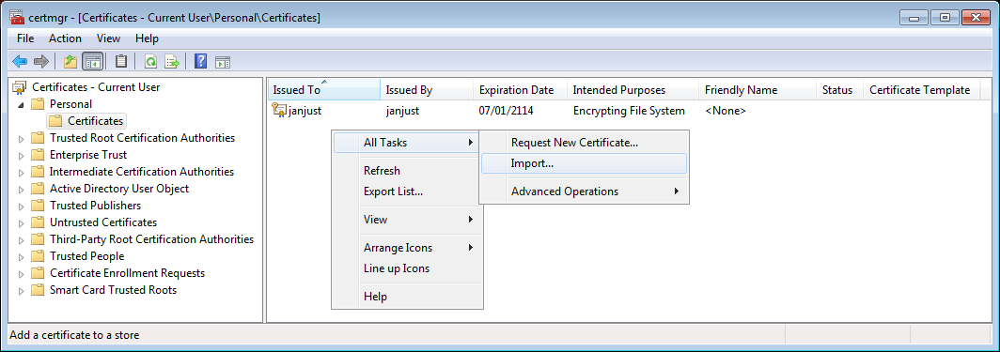
- The "Certificate Import Wizard' will start:
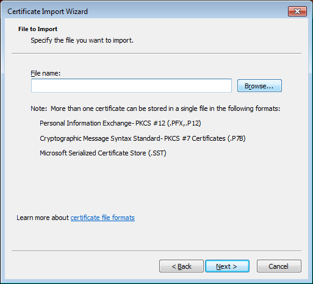
Click on 'Browse' to select the .p12 file to import.
- In the next screen, first change the file type to Personal Information Exchange (.pfx, .p12):
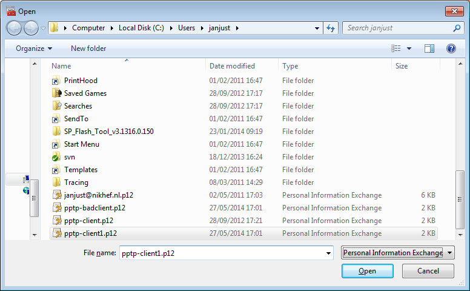
then select the file you want to import, then click OK.
- In the next screen, type in the password for the .p12 file:
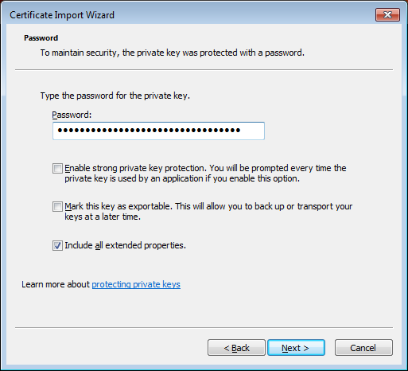
and click Next:
- In the next screen, do NOT choose
'Automatically select the certificate store based on the type of certificate'
but instead click on Place all certificates in the following store and select
the Personal certificate store:
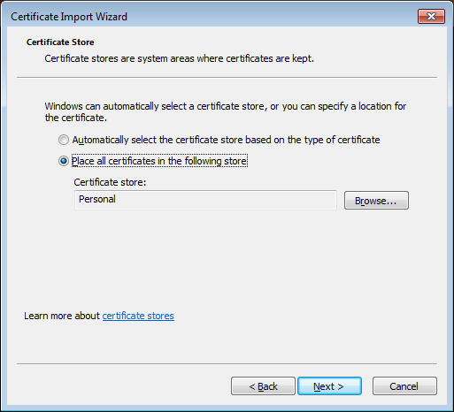
and click Next, review the information, then click Finish.
- If all went well the certificate has now been successfully imported:
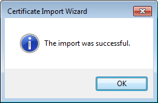
Click OK to return to the 'Certificate Manager console'.
- The 'Certificate Manager console' should now list the newly imported certificate:
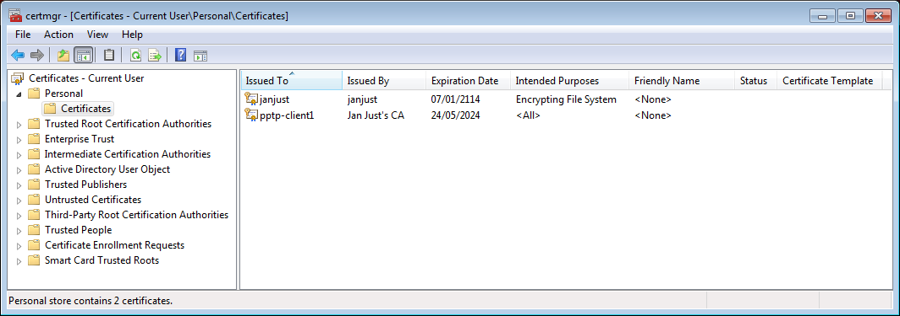
Creating the VPN connection
- Open the Network Sharing Center and click on Set up a new connection or network.
- Choose Connect to a workplace:
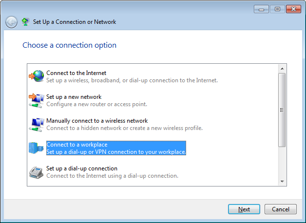
- In the screen that now pops up, choose No, create a new connection
if you have any existing networks (bluetooth, vpn), then click Next.
- Next, click on Use my Internet connection (VPN):
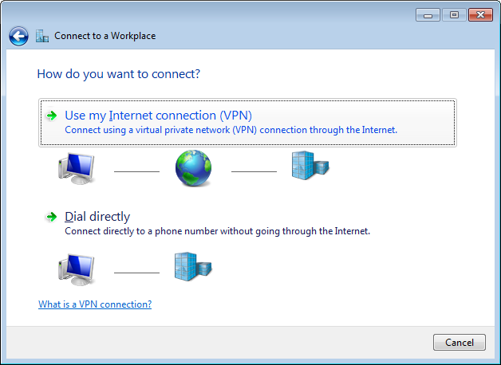
- Fill in the hostname of the PPTP server as the Internet address and choose a
Destination name for the VPN connection.
Make sure the checkbox Don't connect now is ticked:
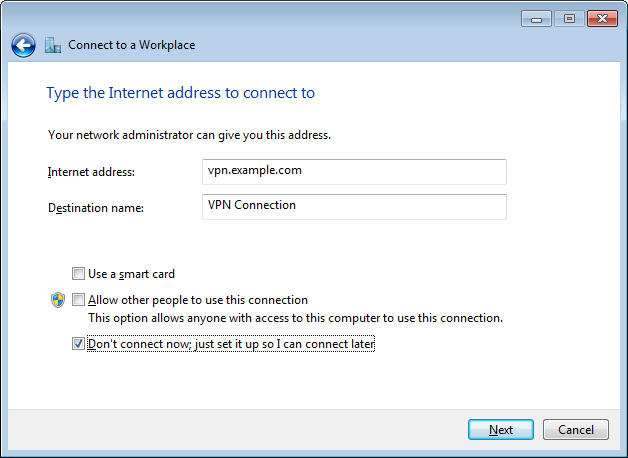
- Skip the section on Username and Password for now.
- Click Close in the Connection is ready for use screen.
- Go back to the Network Sharing Center and click on Change adapter settings
from the list on the left.
- In the screen that now comes up, right-click on your newly created VPN connection entry
and select Properties, then go the tab Security:
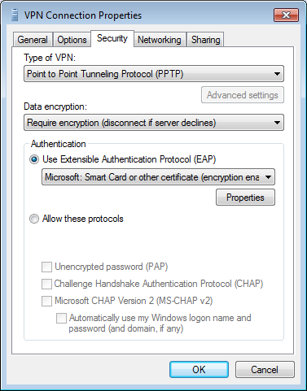
In this screen:
- Change the VPN type to PPTP
- Select Require encryption (disconnect if server declines)
- Click on Use EAP, then select Microsoft: Smart Card or other certificate
- Finally, click on the Properties button that is now enabled
- The EAP properties screen will now come up:
In this screen:
- Select Use a certificate on this computer
- Select Use simple certificate selection
- Select the Validate server certificate checkbox, as otherwise NO server
side certificate checks are performed: the validity and expiration date are only verified
if this checkbox is selected.
Warning If you enable "Validate server certificate" on an existing
connection, then always reboot Windows afterwards. Read up on why
here.
- You can deselect the Connect to these servers checkbox, unless you want to
ensure that you are connecting only to servers with a particular certificate name.
See the next screenshot for details.
- From the list of Trusted Root Certification Authorities, select all CA certificates
that you want to trust for this connection. Normally, you'd select only the CA certificate
that was used to sign the PPTP server certificate (PPTP CA in this example).
- Optional: Configure the EAP properties to specify a server name:
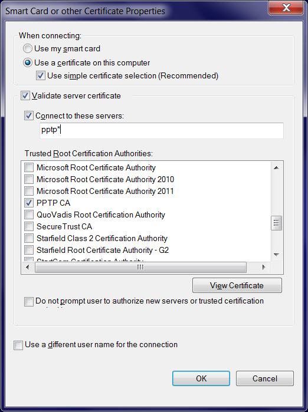
In this screen:
- Select the Validate server certificate checkbox, as otherwise NO server
side certificate checks are performed: the validity and expiration date are only verified
if this checkbox is selected.
Warning If you enable "Validate server certificate" on an existing
connection, then always reboot Windows afterwards. Read up on why
here.
- Select the Connect to these servers checkbox, then fill in the certificate name
(the /CN= part of the VPN server certificate). Wildcards are allowed, so if all
VPN servers have a certificate name starting with pptp then fill in pptp*.
- From the list of Trusted Root Certification Authorities, select all CA certificates
that you want to trust for this connection. Normally, you'd select only the CA certificate
that was used to sign the PPTP server certificate (PPTP CA in this example).
Testing your VPN connection
- In the Network Sharing Center, double click on the VPN connection entry to launch it.
A new dialog will come up to ask which certificate you want to use:
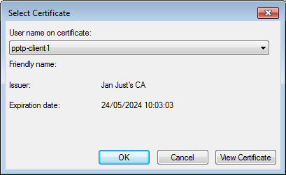
Click OK to select the currently selected certificate.
- If you see the following screen pop up:
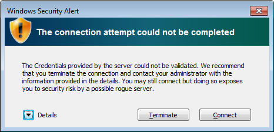
then you can click Connect to continue, but check the
Troubleshooting and sample sessions page to get rid of
this warning.
- The VPN connection will now be established.
- If all went well you can check the properties of your VPN connection. It should provide
information similar to:
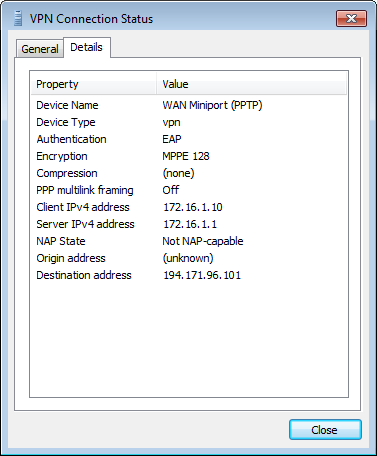
You can/should also read the documentation
How to run a Linux PPTP client with X.509 certificate support
and
How to run a Linux PPTP server with X.509 certificate support